دفتر رهبری (بیت رهبری)
۵ از ۱۴ نفر حذف شدنرهبر
از خرداد ۱۴۰۴ تا حالا یه بار خالی شده
آخرین بررسی ۱۳ آبان ۱۴۰۵
کی جمهوری اسلامی رو میچرخونه، بخش به بخش، و از خرداد ۱۴۰۴ تا حالا کدومشون حذف شدن.
آخرین کسایی که حذف شدن
سر کارکشته شدمرده، برکنار یا بازداشتسرنوشت نامعلوممهرههای اصلیصندلی دوم (خطچین)
با دو انگشت یا چرخ موس زوم کنید. بکشید. روی چهره بزنید.
۲۰ نفری که الان جمهوری اسلامی رو میچرخونن، به ترتیب قدرت واقعی. روی هر کدوم بزنید تا کل ماجرا رو بخونید.
یعنی آدم اصلیه، هر جای تابلو که باشه.
از خرداد ۱۴۰۴ تا حالا حذف شدن. روی هر کدوم بزنید تا ببینید کی جاش نشست.
روی هر بخش بزنید تا برید توش. روی هر چهره بزنید تا کل ماجرا رو بخونید.
رهبر
از خرداد ۱۴۰۴ تا حالا یه بار خالی شده
 محمد محمدی گلپایگانیرئیس دفتر رهبری (از ۱۳۶۸)سر کار
محمد محمدی گلپایگانیرئیس دفتر رهبری (از ۱۳۶۸)سر کار


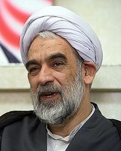
۵ از ۱۴ نفر حذف شدنشورای عالی امنیت ملی۱۸ نفرمسعود پزشکیانرئیسجمهور جمهوری اسلامی (از ۱۴۰۳)سر کار
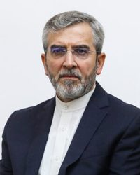
۲ از ۱۸ نفر حذف شدنستاد کل نیروهای مسلح۲۸ نفرعلی عبداللهی علیآبادیرئیس ستاد کل نیروهای مسلح (از ۱۹ مرداد ۱۴۰۵) که با قرارگاه مرکزی خاتمالانبیا یکی شد؛ فرماندهٔ خاتمالانبیا از ۱۴۰۴سر کارهنوز سر این پست نیومده
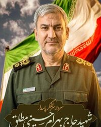
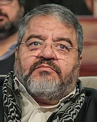
۱۲ از ۲۸ نفر حذف شدنسپاه پاسداران۶۴ نفراحمد وحیدیفرماندهٔ کل سپاه پاسداران (از ۱۰ اسفند ۱۴۰۴)سر کارهنوز سر این پست نیومده
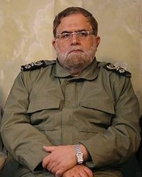
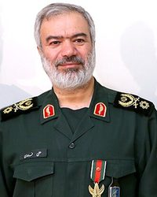
 ۲۷ از ۶۴ نفر حذف شدنارتش جمهوری اسلامی۱۷ نفرامیر حاتمیفرماندهٔ کل ارتش (از ۱۴۰۴ تا حالا)سر کار
۲۷ از ۶۴ نفر حذف شدنارتش جمهوری اسلامی۱۷ نفرامیر حاتمیفرماندهٔ کل ارتش (از ۱۴۰۴ تا حالا)سر کار
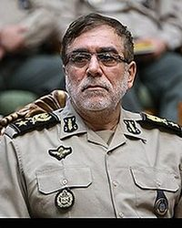


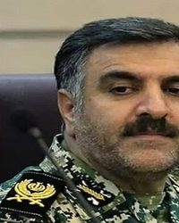
۰ از ۱۷ نفر حذف شدنفراجا (پلیس)۱۲ نفر احمدرضا رادانفرماندهٔ کل انتظامی (فراجا) (از ژانویهٔ ۲۰۲۳)سر کار
احمدرضا رادانفرماندهٔ کل انتظامی (فراجا) (از ژانویهٔ ۲۰۲۳)سر کار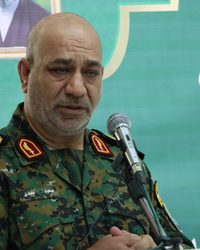
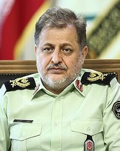
 ۱ از ۱۲ نفر حذف شدنوزارت اطلاعات۶ نفرسرپرست وزارت اطلاعات (نامش اعلام نشده)سرپرست وزارت اطلاعات (از اسفند ۱۴۰۴؛ نامش اعلام نشده)سر کارهنوز سر این پست نیومده?۴ از ۶ نفر حذف شدنریاستجمهوری و دولت۴۴ نفرمسعود پزشکیانرئیسجمهور جمهوری اسلامی (از ۱۴۰۳)سر کار
۱ از ۱۲ نفر حذف شدنوزارت اطلاعات۶ نفرسرپرست وزارت اطلاعات (نامش اعلام نشده)سرپرست وزارت اطلاعات (از اسفند ۱۴۰۴؛ نامش اعلام نشده)سر کارهنوز سر این پست نیومده?۴ از ۶ نفر حذف شدنریاستجمهوری و دولت۴۴ نفرمسعود پزشکیانرئیسجمهور جمهوری اسلامی (از ۱۴۰۳)سر کار
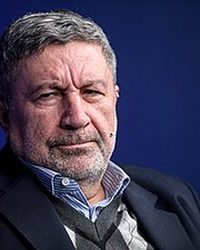

 ۱ از ۴۴ نفر حذف شدنقوهٔ قضاییه۱۴ نفرغلامحسین محسنی اژهایرئیس قوهٔ قضاییه (از ۱۴۰۰، دوباره منصوب شد تیر ۱۴۰۵)سر کار
۱ از ۴۴ نفر حذف شدنقوهٔ قضاییه۱۴ نفرغلامحسین محسنی اژهایرئیس قوهٔ قضاییه (از ۱۴۰۰، دوباره منصوب شد تیر ۱۴۰۵)سر کار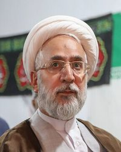
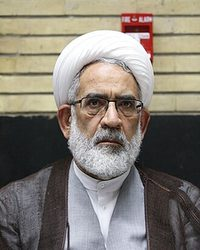

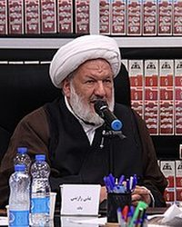
 ۳ از ۱۴ نفر حذف شدنمجلس۲۸۵ عضومحمدباقر قالیبافرئیس مجلس (از ۱۳۹۹، خرداد ۱۴۰۵ دوباره انتخاب شد)؛ فروردین ۱۴۰۵ ریاست هیئت جمهوری اسلامی تو مذاکرات اسلامآباد با آمریکا رو داشتسر کار
۳ از ۱۴ نفر حذف شدنمجلس۲۸۵ عضومحمدباقر قالیبافرئیس مجلس (از ۱۳۹۹، خرداد ۱۴۰۵ دوباره انتخاب شد)؛ فروردین ۱۴۰۵ ریاست هیئت جمهوری اسلامی تو مذاکرات اسلامآباد با آمریکا رو داشتسر کار


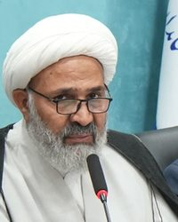
۰ از ۲۸۵ نفر حذف شدنشورای نگهبان۱۲ نفر احمد جنتیدبیر شورای نگهبان (از ۱۳۷۱)سر کار
احمد جنتیدبیر شورای نگهبان (از ۱۳۷۱)سر کار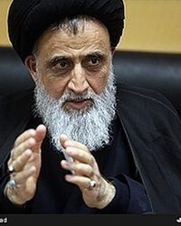
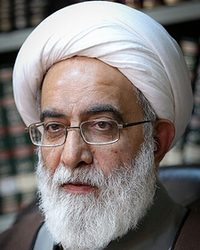
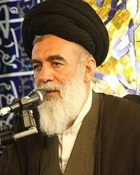
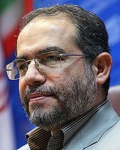
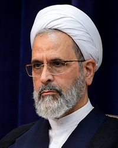
۰ از ۱۲ نفر حذف شدنمجلس خبرگان۸۷ عضومحمدعلی موحدی کرمانیرئیس مجلس خبرگان (از ۱۴۰۳)؛ امام جمعهٔ موقت تهران (از ۱۳۹۱)سر کار
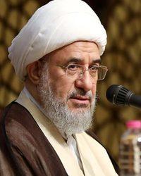

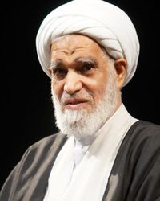
 ۰ از ۸۷ نفر حذف شدنمجمع تشخیص مصلحت۳۶ عضو
۰ از ۸۷ نفر حذف شدنمجمع تشخیص مصلحت۳۶ عضو صادق لاریجانیرئیس مجمع تشخیص مصلحت نظام (از ۱۳۹۷)سر کار
صادق لاریجانیرئیس مجمع تشخیص مصلحت نظام (از ۱۳۹۷)سر کار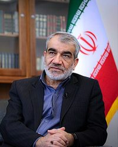
 +
+
 ۰ از ۳۶ نفر حذف شدناستانها۷۰ نفر
۰ از ۳۶ نفر حذف شدناستانها۷۰ نفر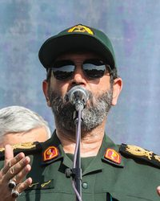

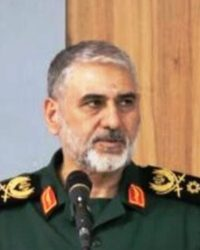
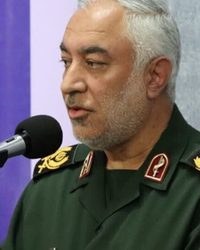
۰ از ۷۰ نفر حذف شدنبنیادها۴ نفر حسین دهقانرئیس بنیاد مستضعفان (از ۱۴۰۲)سر کار۰ از ۴ نفر حذف شدنرسانهها و آخوندهای حکومتی۹ نفر
حسین دهقانرئیس بنیاد مستضعفان (از ۱۴۰۲)سر کار۰ از ۴ نفر حذف شدنرسانهها و آخوندهای حکومتی۹ نفر پیمان جبلیرئیس سازمان صداوسیماسر کار
پیمان جبلیرئیس سازمان صداوسیماسر کار
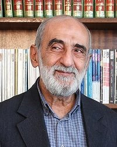
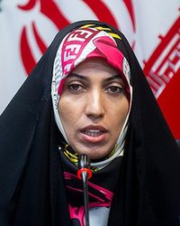
۰ از ۹ نفر حذف شدنبرنامهٔ هستهای۲۷ نفرمحمدمهدی طهرانچیرئیس دانشگاه آزاد اسلامی؛ فیزیکدانکشته شد · ۲۳ خرداد ۱۴۰۴سر کار

 ۲۲ از ۲۷ نفر حذف شدنمقامهای سابق و پشتپرده۲۵ نفرابراهیم رئیسیرئیسجمهور (۱۴۰۰ تا ۱۴۰۳)مُرد · ۳۰ اردیبهشت ۱۴۰۳سر کار+
۲۲ از ۲۷ نفر حذف شدنمقامهای سابق و پشتپرده۲۵ نفرابراهیم رئیسیرئیسجمهور (۱۴۰۰ تا ۱۴۰۳)مُرد · ۳۰ اردیبهشت ۱۴۰۳سر کار+ ۱ از ۲۵ نفر حذف شدن
۱ از ۲۵ نفر حذف شدناز خرداد ۱۴۰۴ تا حالا یه بار خالی شده
از خرداد ۱۴۰۴ تا حالا یه بار خالی شده
از خرداد ۱۴۰۴ تا حالا ۲ بار خالی شده
از خرداد ۱۴۰۴ تا حالا ۲ بار خالی شده
از خرداد ۱۴۰۴ تا حالا ۲ بار خالی شده
از خرداد ۱۴۰۴ تا حالا یه بار خالی شده
از خرداد ۱۴۰۴ تا حالا یه بار خالی شده
از خرداد ۱۴۰۴ تا حالا یه بار خالی شده
از خرداد ۱۴۰۴ تا حالا ۲ بار خالی شده
از خرداد ۱۴۰۴ تا حالا ۲ بار خالی شده
از خرداد ۱۴۰۴ تا حالا یه بار خالی شده
کسی پیدا نشد.
کسی پیدا نشد.
کسی پیدا نشد.
روی یه استان بزنید
روشنتر: مقامهای بیشتری از این استان روی تابلو هستن. قرمز: یکیشون حذف شده.
۲۴ نفر ثبت شده
۱۶ نفر ثبت شده
۱۰ نفر ثبت شده
۲۵ نفر ثبت شده
۷ نفر ثبت شده
۶ نفر ثبت شده
۷ نفر ثبت شده
۵۷ نفر ثبت شده
۶ نفر ثبت شده
۲۳ نفر ثبت شده
۷ نفر ثبت شده
۲۶ نفر ثبت شده
۸ نفر ثبت شده
۷ نفر ثبت شده
۱۲ نفر ثبت شده
۲۴ نفر ثبت شده
۷ نفر ثبت شده
۵ نفر ثبت شده
۱۳ نفر ثبت شده
۱۷ نفر ثبت شده
۱۱ نفر ثبت شده
۷ نفر ثبت شده
۱۲ نفر ثبت شده
۷ نفر ثبت شده
۱۰ نفر ثبت شده
۱۴ نفر ثبت شده
۱۲ نفر ثبت شده
۶ نفر ثبت شده
۱۱ نفر ثبت شده
۱۷ نفر ثبت شده
۷ نفر ثبت شده
از خرداد ۱۴۰۴ تا حالا ۲ بار خالی شده
ده دور سریع. یه چهره رو انتخاب کنید. همهٔ جوابها از همین تابلو میاد، با منبعش.
کسی پیدا نشد.
جنگی که ۹ اسفند ۱۴۰۴ شروع شد هنوز تموم نشده. مرحلهٔ اصلیش با آتشبسی که پاکستان ۱۹ فروردین ۱۴۰۵ واسطهش شد متوقف شد، و آمریکا ۱۵ اردیبهشت اعلام کرد عملیات خشم حماسی تموم شده. تفاهمنامهٔ اسلامآباد که ۲۷ خرداد امضا شد درگیریها رو برای ۶۰ روز متوقف کرد، ولی ۱۶ و ۱۷ تیر از هم پاشید: جمهوری اسلامی به سه تا کشتی حمله کرد، و آمریکا ۱۳ شب پشت سر هم ایران رو زد و محاصرهٔ دریایی رو دوباره برقرار کرد. یه دور دیگه حملهٔ آمریکا هم از ۸ شهریور تا اواخر شهریور بود. از اون موقع، طبق صفحههایی که خوندیم، آمریکا و اسرائیل به خاک ایران حمله نکردن؛ محاصره سر جاشه و سپاه پاسداران با سرعتی بیسابقه به کشتیها نزدیک تنگهٔ هرمز حمله کرده (دستکم ۱۲ تا تو هفتهٔ منتهی به ۱۳ مهر و ۱۲ تای دیگه از ۱۹ تا ۲۴ مهر). رئیسجمهور جمهوری اسلامی اسم این وضع رو گذاشته «نه جنگ، نه صلح». از ۱۷ فروردین هیچ مقام ارشدی تو حملهٔ آمریکا یا اسرائیل کشته نشده (کمال خرازی که ۲۰ فروردین فوت کرد، از زخمهای قبلیش مُرد). مذاکرات: قطر و پاکستان پیغامها رو جابهجا میکنن. جمهوری اسلامی ۶ آبان طرح صلح قطر رو رد کرد؛ همون روز والاستریت ژورنال گزارش داد جیدی ونس به دستور ترامپ به محسن رضایی، دبیر شورای عالی امنیت ملی، نامه نوشته؛ و ۸ آبان میانجیهای قطری دوباره رفتن تهران. تهدیدها: ترامپ قول داده تا انتخابات میاندورهای ۱۲ آبان حمله نکنه، ولی ۲ آبان گفت حمله ممکنه «شاید فردا» باشه و به اکسیوس گفت «باید کار رو تموم کنیم، یا با توافق یا یه راه دیگه». نتانیاهو که ائتلافش تو انتخابات ۵ آبان اسرائیل اول شد ولی اکثریت نگرفت، به ارتش اسرائیل و موساد دستور داده برای سرنگونی رژیم کار کنن. ایبیسی، نیویورک تایمز و اکسیوس (به نقل گلف نیوز) از برنامهٔ مشترک آمریکا و اسرائیل برای یه حملهٔ کوتاه و سنگین بعد از انتخابات میاندورهای خبر دادن؛ ترامپ هنوز تصمیم نگرفته.
en.wikipedia.orgen.wikipedia.orgaljazeera.comcbsnews.comاز جدول @HekasrehCrisis (۱۷ فروردین ۱۴۰۵) شروع شد، نفر به نفر بررسی شد و بهروز شد. مرز استانها: geoBoundaries (CC BY 4.0). چیزی اشتباهه یا کسی جا افتاده؟ تو جعبهٔ پیام همین صفحه بگید، درستش میکنم.
همینجا بگید تا بقیه هم جوابتون رو بدن؛ فارسی یا انگلیسی.
گفتوگو
سقوطی که از همه مهمتر بود، عکسی که اشتباه گذاشتم، سقوطی که جا انداختم، یا جناحی که فکر میکنید یکی توشه. اگه منبع دارید بیارید. اینا حرف خود خوانندههاست، نه حرف من.
اطلاعات خصوصی هیچکس رو ننویسید. قوانین گفتوگو و اطلاعاتی که از شما نگه میدارم